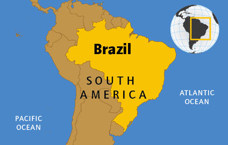
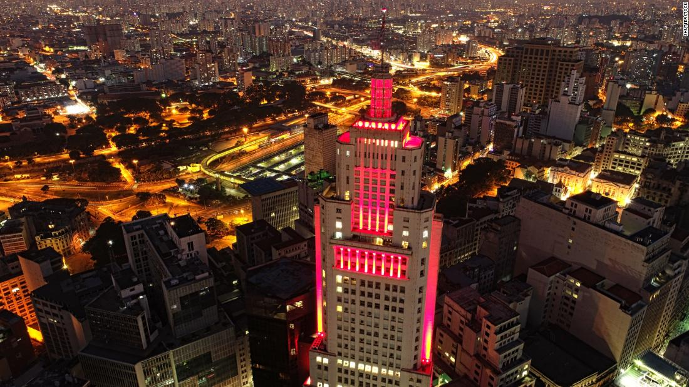
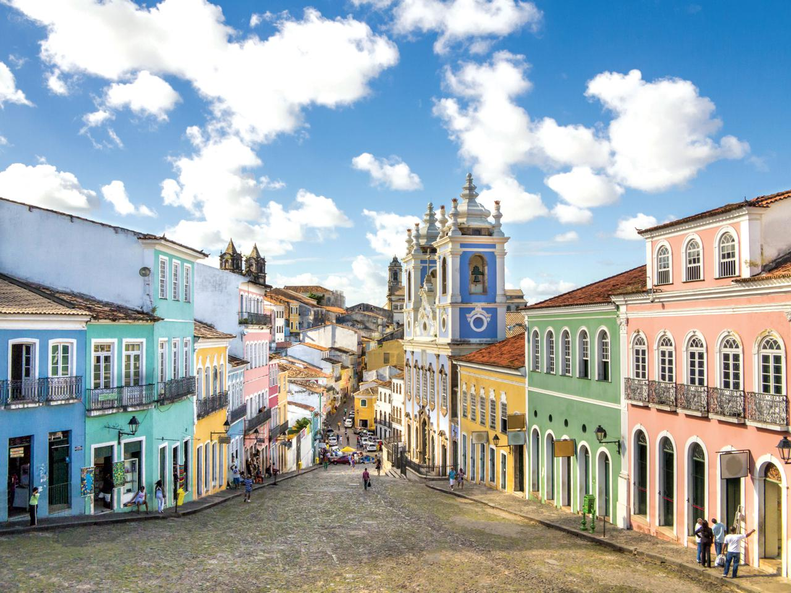

Beautiful Brazil
Click below to find out more about this amazing country!

Brazil Facts
OFFICIAL NAME: Federal Republic of Brazil
FORM OF GOVERNMENT: Democratic federal republic
CAPITAL: Brasilia
POPULATION: 183,888,841
OFFICIAL LANGUAGE: Portuguese
MONEY: Real
AREA: 3,286,470 square miles (8,511,965 square kilometers)
MOUNTAIN RANGES: Serra do Mar, Serra do Espinhaço
MAJOR RIVERS: Amazon, São Francisco, Paraná, Tocantin
Brazil is the largest country in South America and the fifth largest nation in the world.
It forms an enormous triangle on the eastern side of the continent with a 7,400km coastline along the Atlantic Ocean.
It has borders with every South American country except Chile and Ecuador.
The Brazilian landscape is very varied.
It is most well known for its dense forests, including the Amazon, the world’s largest rainforest, in the north.
But there are also dry grasslands (called pampas), rugged hills, pine forests, sprawling wetlands, immense plateaus (areas of level high ground) and a long coastal plain.
Rio de Janeiro
Rio de Janeiro is the second largest city in Brazil, on the South Atlantic coast.
Rio is famous for its breathtaking landscape, its laid back beach culture and its annual
carnival. Although, their soccer skills here are very well recognized.
Rio de Janeiro is one of the most visited cities in the Southern Hemisphere and is known for its
natural settings, Carnival, samba, bossa nova, and balneario beaches[10] such as Barra da
Tijuca, Copacabana, Ipanema, and Leblon.
In addition to the beaches, some of the most famous landmarks include the giant statue of Christ
the Redeemer atop Corcovado mountain, named one of the New Seven Wonders of the World;
Sugarloaf Mountain with its cable car; the Sambódromo (Sambadrome), a permanent grandstand-lined
parade avenue which is used during Carnival; and Maracanã Stadium, one of the world's largest
football stadiums.
Rio de Janeiro was the host of the 2016 Summer Olympics and the 2016 Summer Paralympics, making
the city the first South American and Portuguese-speaking city to ever host the events, and the
third time the Olympics were held in a Southern Hemisphere city.[11]
The Maracanã Stadium held the finals of the 1950 and 2014 FIFA World Cups, the 2013 FIFA
Confederations Cup, and the XV Pan American Games.
São Paulo
São Paulo is a municipality in the Southeast Region of Brazil. The metropolis is an alpha
global city (as listed by the GaWC) and the most populous city in Brazil, the Americas, the
Western Hemisphere and the Southern Hemisphere. Additionally, São Paulo is the largest
Portuguese-speaking city in the world. The municipality is also the world's 4th largest city
proper by population. The city is the capital of the surrounding state of São Paulo, the most
populous and wealthiest state in Brazil. It exerts strong international influences in commerce,
finance, arts and entertainment. The name of the city honors the Apostle, Saint Paul of Tarsus.
The city's metropolitan area, the Greater São Paulo, ranks as the most populous in Brazil and
the 12th most populous on Earth. The process of conurbation between the metropolitan areas
located around the Greater São Paulo (Campinas, Santos, Sorocaba and São José dos Campos)
created the São Paulo Macrometropolis, a megalopolis with more than 30 million inhabitants, one
of the most populous urban agglomerations in the world.

Salvador
Salvador, also known as São Salvador da Bahia de Todos os Santos (English: Holy Savior of
the Bay of All Saints), is the capital of the Brazilian state of Bahia. With 2.9 million people
(2017), it is the largest city proper in the Northeast Region and the 4th largest city proper in
the country, after São Paulo, Rio de Janeiro and Brasília.
Founded by the Portuguese in 1549 as the first capital of Brazil, Salvador is one of the oldest
colonial cities in the Americas. A sharp escarpment divides its Lower Town (Cidade Baixa) from
its Upper Town (Cidade Alta) by some 85 meters (279 ft). The Elevador Lacerda, Brazil's first
urban elevator, has connected the two since 1873. The Pelourinho district of the upper town,
still home to many examples of Portuguese colonial architecture and historical monuments, was
named a World Heritage Site by UNESCO in 1985. The city's cathedral is the see of the primate of
Brazil and its Carnival celebration has been reckoned as the largest party in the world.
Salvador was one of the first slave ports in the Americas and the African influence of the
slaves' descendants makes it a center of Afro-Brazilian (negro) culture. The city is noted for
its cuisine, music, dance and architecture. Porto da Barra Beach in Barra has been named one of
the best beaches in the world. Itaipava Arena Fonte Nova was the site of the city's games during
the 2014 Brazilian World Cup and 2013 Confederations Cup.
Salvador forms the heart of the Recôncavo, Bahia's rich agricultural and industrial maritime
district, and continues to be a major Brazilian port. Its metropolitan area, housing 3 899 533
people (2018) forms the wealthiest one in Brazil's Northeast Region (2015).
1 / 3

Colourfull streets
❮
❯